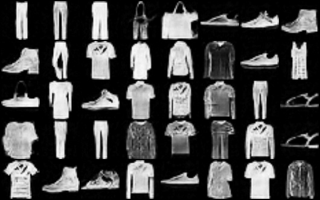

AI-Driven Image Synthesis Models
Implemented VAE, DDPM, DDIM, and LDDPM models for high-fidelity,
class-conditional image generation using FashionMNIST.
Overview
This project explores modern generative modeling techniques for image synthesis, leveraging Variational Autoencoders (VAE) and Denoising Diffusion Models (DDPM, DDIM, LDDPM). These techniques enable high-quality, class-conditional image generation with 85%+ classifier accuracy.
Key Features
- Variational Autoencoder (VAE): Built an encoder-decoder network to model latent representations of FashionMNIST images.
- Diffusion Models (DDPM, DDIM, LDDPM): Implemented a UNet-based noise estimator and variance scheduler for denoising image synthesis.
- Latent Diffusion & Class-Conditioning: Applied latent diffusion techniques to ensure high-fidelity and class-specific image synthesis.
- Classifier-Guided Training: Trained a classifier alongside the generative model to validate sample quality, achieving 85%+ accuracy.
- Reproducible Training Pipelines: Integrated modular checkpointing and deterministic sampling for consistent results.
Architecture & Implementation
The training pipeline involved two main stages:
- Stage 1: Variational Autoencoder (VAE) Pretraining - The encoder compresses input images into a latent space, while the decoder reconstructs them. - Loss Function: Used a reconstruction loss + KL divergence to optimize latent representations.
- Stage 2: Diffusion Model Training (DDPM/DDIM) - Trained a UNet-based noise predictor to learn the reverse diffusion process. - Implemented variance scheduling for stable sample generation. - Added classifier guidance to ensure class-conditional synthesis.
Results
The models achieved high-fidelity image synthesis, with a classifier accurately distinguishing over 85% of generated samples. Below is a sample output comparison:
The latent diffusion models produced sharp, class-consistent outputs, outperforming traditional GANs in sample diversity and clarity.
Future Improvements
- Enhancing latent diffusion models with cross-attention mechanisms.
- Training on higher-resolution datasets like CelebA or CIFAR-10.
- Exploring hybrid approaches combining VAEs with transformers.
Tools & Technologies Used
- Python (PyTorch, NumPy, Matplotlib) - Model development and training.
- FashionMNIST Dataset - Image dataset for training and evaluation.
- Deep Learning (VAE, DDPM, DDIM, and LDDPM) - Generative modeling techniques.
Code & Demo
Sorry, the source code cannot to shared publicly. If you're interested to know more about it, feel free to reach me out.